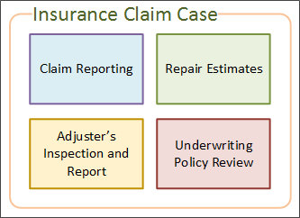
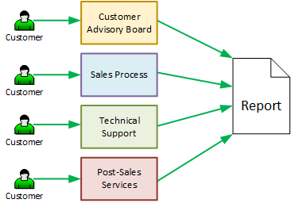
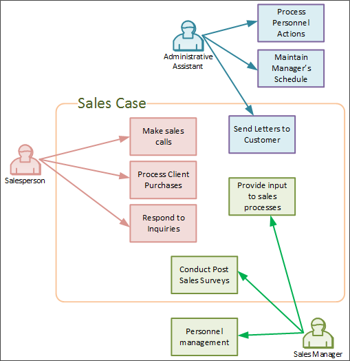

Process Director implements Case Management as a core feature of the product.
A Case is group of processes, transactions, or responses that define a complex Activity, and which can be tracked over a period of time. A Case usually involves actions by many different people, both inside and outside of the organization. Every action, message, response, and document generated during this complex Activity becomes part of the Case. Case management is the ability to organize and track Cases, and emphasizes the collation of all of the information that relates to the Case, rather than concentrating on a specific process in the way that traditional Business Process Management does. In the context of Process Director, we would define a Case as being a set of related, but separate, processes.
The question immediately arises, 'What constitutes an individual Case?" A common misconception is that the Case revolves around a specific person, like a customer. But let's examine this. A customer can do many things, such as participate in a sales process, attend training, or submit a technical support ticket. All of these things can't be a single "customer Case", as they are completely unrelated. Certainly, we might wish to see everything the customer has done, perhaps in a dashboard or report, but the customer can't be the Case, because many of the interactions with the customer are entirely unrelated to each other. An auto insurance claim, on the other hand, is a Case. Once you have a fender-bender, a number of processes have to be completed before the claim is closed. First the claim has to be reported to the insurance company, which reviews the circumstances and determines whether the claim is valid. An adjuster must inspect the vehicle, and submit a report on the damage. Repair estimates must be obtained from one or more repair shops, and the estimate approved. Underwriting must review the policy to determine if changes in risk require higher premiums for the policy. Case management bundles all of these processes into a single claim Case that provides them all with a shared context.
In general, a Case provides a shared context for a set of processes, Forms, and documents that might or might not be otherwise related. Some processes, such as the Repair Estimate, will only run when a claims Case is in progress. Other processes, such as the underwriter review, will happen outside of a claim Case. When you renew your insurance, for example, an underwriter review will be performed. The shared context of the Case enables you to differentiate an underwriter review that occurs when processing a claim from the recurring underwriter reviews that occur when your policy renews. The shared context of a Case enables you to track every process that is started, every form that is submitted, and every document that is uploaded during a Case. This is true whether the processes are related or not. Any object that shares the Case context, becomes part of the Case.

Traditional Business Process Management (BPM) focuses on individual processes, which creates quite a different set of relationships if you want to collate information.

The BPM model is organized around processes, and the primary concern is how the individual process is working, and the details of who participates in the process is secondary. BPM concentrates on a single process, or a parent process with a limited number of child processes, and where the process and/or Form collect all of the data related to the process. Each instance of the process has its own separate life, which is not dependent upon any other process. Process behavior can vary widely, but only in well-understood and predictable ways that you incorporate into the process' design. The fundamental assumption of the BPM model is that processes will consist of fairly rigid behaviors, with variations that only occur within defined limits.
In the Case Management model, the activities that occur in the Case can't be constrained to a process diagram. Two important characteristics define a Case.
Two Cases of the same type may require different processes, documents, tasks, or data objects, and activities may need to be performed in a different order. Because of this inherent complexity, the progress of a Case can't be governed by a set of fixed rules like a BPM process. Instead, Case workers typically need to make decisions about how the Case progresses, and what processes and data must be incorporated into the Case. Each individual process in the Case may operate on the more rigid lines of the BPM model, so that activities, milestones, due dates, etc. can be tracked. The Case processes are generally asynchronous with respect to one another, but must share context and data. The overall progress of the Case—what processes must occur, and when—is conducted on a more ad hoc basis, and is controlled by the workers or Case manager involved in the Case. In short, Case Management depends on human decision-making, rather than on preconfigured business rules.
Case Management styles may also vary widely. Our example of an auto insurance claim is fairly straightforward, because the range of data interactions are well-understood and relatively limited in scope. We know, for example, that an adjuster must inspect the vehicle, and a repair obtained, so our path to completing the Case is known, and every Case will fall within this general structure and reach a known conclusion.
Conversely, a Case that involves a criminal investigation must be highly unstructured and unpredictable. There may or may not be witnesses, physical evidence, multiple suspects, and a variety of crimes that may be charged. Learning new facts may change the outcome of the Case, and we don't know if the Case will end when a suspect is charged, charges are dismissed, or a suspect is never identified. So, Case Management styles can vary from a Case that consists of a collection of known, predetermined procedures, to highly ad hoc Cases where the required procedures and outcomes can't be known, and which rely almost entirely on human decision-making.
Because a Case incorporates complex processes that take place over a relatively long period of time, both Case and non-Case workers are likely to participate in the Case. For instance, during a sales Case, a salesperson may work in the context of a Case most of the time. An administrative assistant, on the other hand, may never need to have direct access to a Case, but might be instructed to send a letter to a client, which requires working temporarily in the client's Case for the sole task of sending correspondence.

The Case Management model ensures that only tasks that relate directly to a Case are included in that Case by setting the Case context appropriately for each task that needs to be done. Ideally, the determination of whether a task must be performed in or out of Case context should be determined by the Case management system, and transparent to the user. When the Administrative Assistant is assigned the task of sending a letter to a customer, work on that task should be automatically placed in the context of that customer's Case, perhaps without the user even being aware of it.
Case Management represents a step forward from traditional BPM processes. One might even argue that many—perhaps most—of what have been seen as traditional BPM processes are actually Cases, and not single processes. Let's take the example of the very common BPM process of employee onboarding.
Employee Onboarding is a complex process that may require tasks be completed by many different parts of the organization. Think of all the things that might need to happen to bring a new employee aboard:
Two things are important to remember at this point.
These two considerations make the onboarding process very complex. Trying to encapsulate all of these activities into a single BPM process, as has been done traditionally, is a difficult job that requires complex nesting, chaining, and decision logic, and, even then, human decision-making still is required to determine what specific tasks have to be performed for different employees. If we re-imagine employee onboarding as a Case, however, most of that difficult logic is eliminated. The Case would still contain all of th e required processes for IT, HR, Facilities, etc., but each Case would be tailored to the specific requirements of the new employee.
The key advantage of the Case Management model is that it marries human collaboration and decision-making to the process engine that executes processes and tracks deadlines and milestones. Moreover, the Case Management model makes all aspects of the Case visible, and doesn't segregate the Case workers to their tiny piece of the process. Thus, Case management combines the advantages of human collaboration and decision-making with the process automation of traditional BPM.
In reality, the line between BPM and Case Management is very blurry. There are very few work processes, outside of rigid compliance and manufacturing processes, that can be completely and accurately programmed by the BPM process, because nearly every process has some element of ad hoc decision-making. Conversely, even high-level strategic processes, such as knowledge work or innovation management, require some level of structure to their individual elements, and aren't completely ad hoc. In other words, every process exists along a continuum from pure BPM (rare) to pure Case management (rare). As such, deciding when to implement a process as in BPM, with rather complicated nesting, iteration and chaining logic, and when to implement the process with Case Management, has to be done very much by feel, rather than by any hard and fast rules.